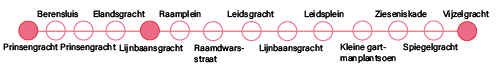
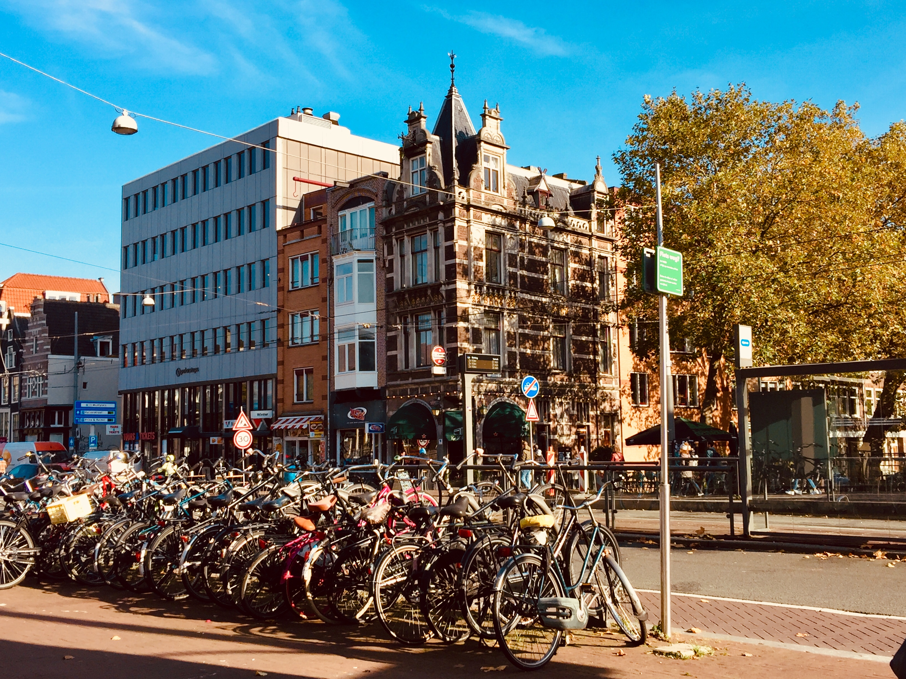
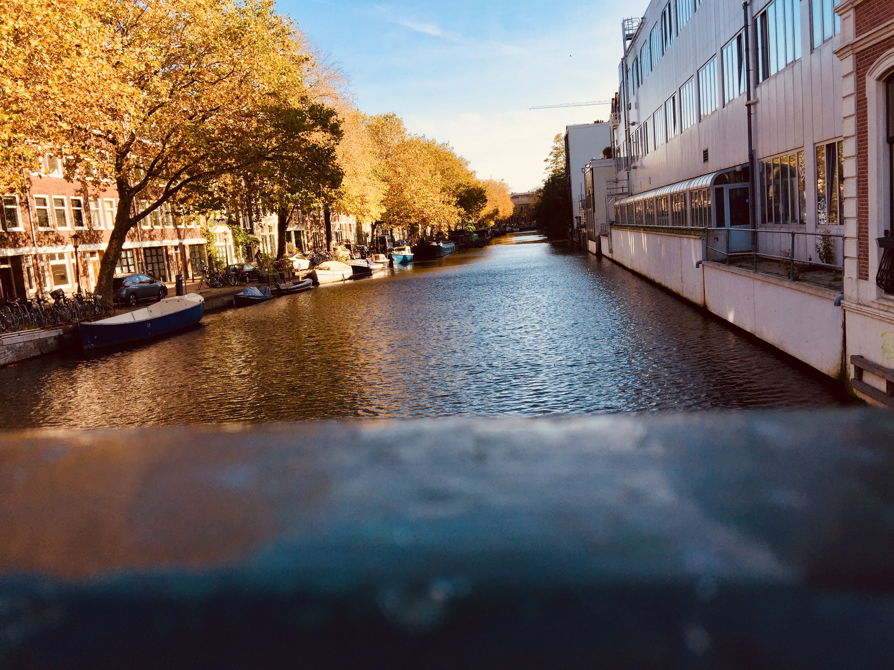

Short routes
City walk
Time 30 minutes
Distance 2,8 km


Time 30 minutes
Distance 2,8 km
The central station of Amsterdam was build between 1881 and 1889 by the architects A.L. van Gendt, P.J.H Cuypers and L.J. Eijmer. Today it is one of the busiest stations in the Netherlands. The central station that we know now was build to replace the in 1878 closed station Willemspoort. The central station is just like other buildings out that time build on wooden pillars. Some parts of the building were taken down and build again to modernize them. This was also done to some of the parts on the inside. Curious to see how the central station looked in the 19th century, look it up on google it was beautiful then too.

The Dam is the historic heart of the city. On the Dam is one of the magnificent buildings the royal palace.The royal palace was in 1605 the government house and turned into the royal palace in 1808. It was build between 1648 and 1665 as the government house. The architect that designed the building was Jacob van Campen. The build of this building is seen as one of the most important historic and cultural moments of the golden century of the Netherlands. The balcony on the front side was only put on after 1808 by King Lodewijk Napoleon.He also added wooden walls on the inside to split the large rooms up into separate quarters. Now the building is only used for special occasions, like when princess Beatrix did her departure from the throne.

The Hirsch building is a monumental building on the Leidseplein and the kleine-gartmanplantsoen. The design is from A.Jacot and Jan Gerard as buildings expert. The plans for a new building was made in 1910 and the official opening was in 1912. Around 9000m3 ground had te be replaced in order to get 1600 wooden fundingspillars into the ground. Together with 500 pillars they had to carry the weight of the buiding.

Time 35 minutes
Distance 2,5 km
The Prinsengracht is called after Prins van Oranje. And is one of the 4 head canals that makes the grachtengordel. The creation started in 1612 after design of Hendrick jacobsz Staets and Lucas Jansz Sinck. On the sides of the canal stand many monuments like:
This canal is named after the lijnbanen of the touwslagerijen. This was digged after the start of the grachtengordel in 1612. On the Zieseniskade and westkade of the Lijnbaansgracht you can see the backside of the Barleaus Gymnasium. The building on the Weteringschans was in the earlier days this was an industry school
The Vijzelgracht is from 1658, when the large city expansion found place. Before that there was a monastery and an orphanage. Believed is that the Vijzeggracht and the Vijzelstraat is named after 17th century residents, Cornelis and Jan Vijzelaar.
